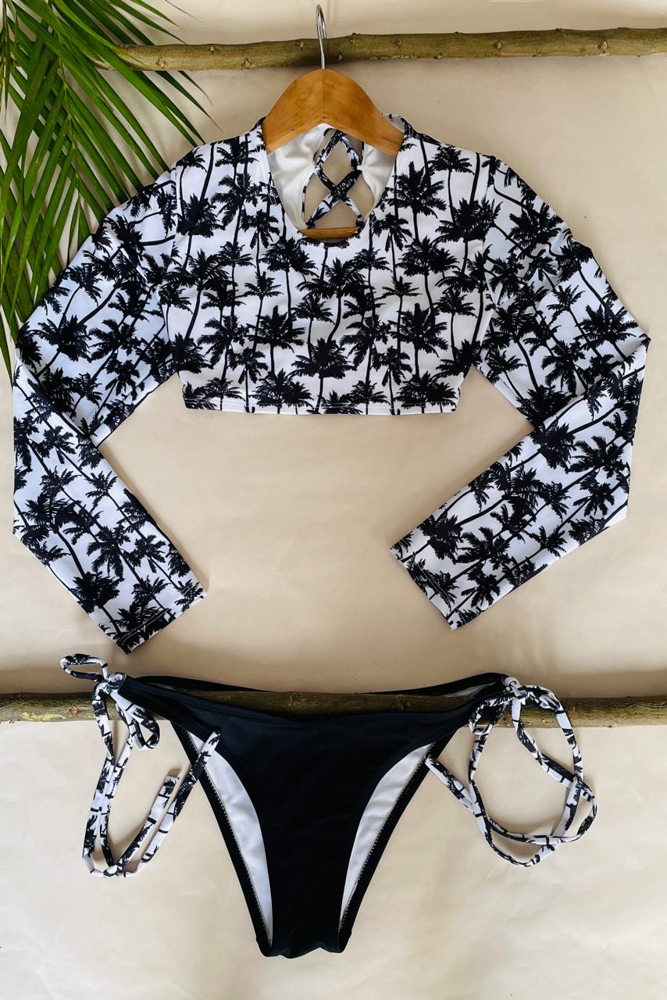
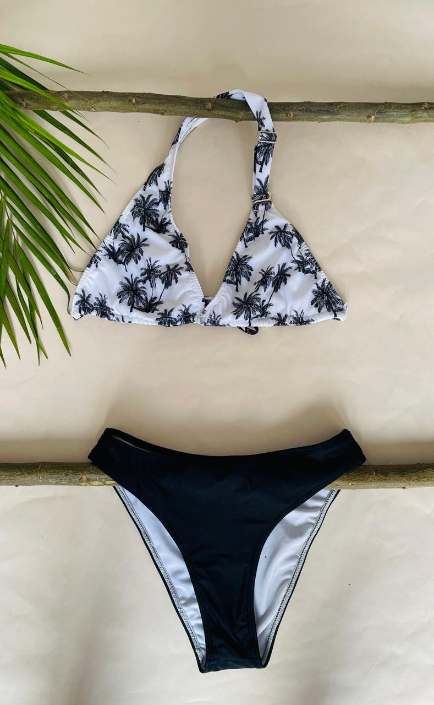
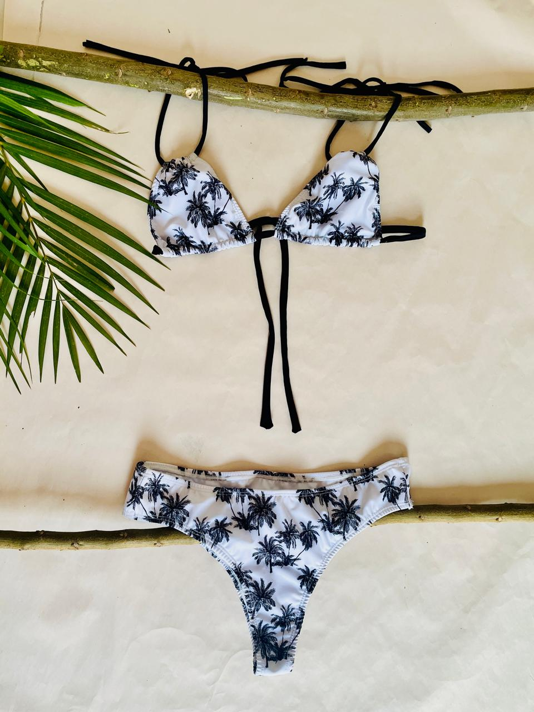
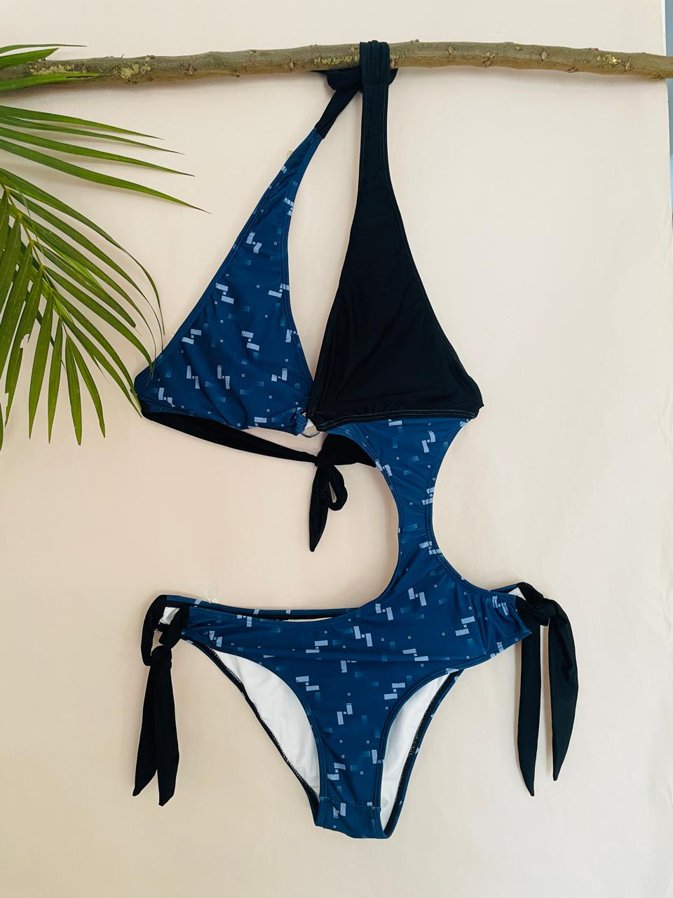

Descubre el bikini perfecto para lucir radiante en tus días de sol. Este exclusivo diseño de
dos
piezas
combina el vibrante color verde limón con un elegante contraste en negro, creando un look
moderno y
fresco que resalta tu estilo único.
Caracteristicas
Materiales de alta calidad: Fabricado con una mezcla premium de poliéster y spandex, este
bikini
ofrece
una textura suave al tacto, resistencia al agua salada y clorada, y un ajuste perfecto que
se
adapta a tu figura.

Vestido de Baño Dos Piezas
$110.000
Elegancia y protección en uno solo. Este traje de baño de manga larga combina
un diseño
moderno con tejidos de alta calidad, brindando confort, estilo y protección
UV. Ideal para
quienes buscan lucir espectaculares mientras cuidan su piel bajo el sol.
Perfecto para
cualquier actividad acuática.
Caracteristicas
El traje de baño manga larga ofrece protección UV, comodidad y estilo gracias
a su tela de
secado rápido y diseño ergonómico que favorece la figura. Con costuras
planas para evitar
roces, es perfecto para deportes acuáticos o días de playa.

Vestido de Baño Dos Piezas
$95.000
Este bikini negro es la opción perfecta para un look elegante y atemporal en la playa o la
piscina. Su diseño minimalista resalta la figura con un estilo sofisticado, ideal para
cualquier ocasión bajo el sol.
Caracteristicas
Este bikini negro está confeccionado con una mezcla de poliéster y spandex, lo que garantiza
resistencia al agua salada y clorada, secado rápido y una textura suave al tacto. Incluye un
top de diseño triangular ajustable para un soporte personalizado y un panty de corte clásico
que asegura comodidad y cobertura moderada. Su estilo minimalista y color negro sólido lo
hacen versátil y fácil de combinar con cualquier accesorio.

Vestido de Baño Dos Piezas
$105.000
Este bikini blanco es la elección perfecta para un look fresco y sofisticado. Con su diseño
elegante y cómodo, es ideal para lucir radiante bajo el sol, destacando con su color puro y
detalles delicados que realzan tu estilo en la playa o la piscina.
Caracteristicas
Este bikini blanco está elaborado con una mezcla de poliéster y spandex de alta calidad,
ofreciendo resistencia al agua salada y clorada, secado rápido y una textura suave y cómoda.
Su diseño incluye un top de copa fija con detalles delicados para un ajuste seguro y un
panty de corte medio que equilibra estilo y comodidad. El color blanco aporta un toque
fresco y elegante, ideal para resaltar el bronceado y combinar con cualquier accesorio.

Vestido de Baño una sola pieza
$80.000
Este traje de baño azul de una sola pieza combina confort y elegancia en un diseño que realza
la figura. Con su color vibrante y estilo clásico, es ideal para quienes buscan un traje de
baño que ofrezca soporte y estilo al mismo tiempo, ya sea en la playa o en la piscina.
Caracteristicas
Elaborado con una mezcla de poliéster y elastano, este traje de baño ofrece gran elasticidad
y ajuste perfecto. Su diseño de una sola pieza brinda soporte en el área del busto y una
cobertura cómoda. Además, es resistente al agua salada y clorada, se seca rápidamente y
mantiene su forma después de varios usos. El escote moderado y las costuras detalladas
aportan un toque de sofisticación.